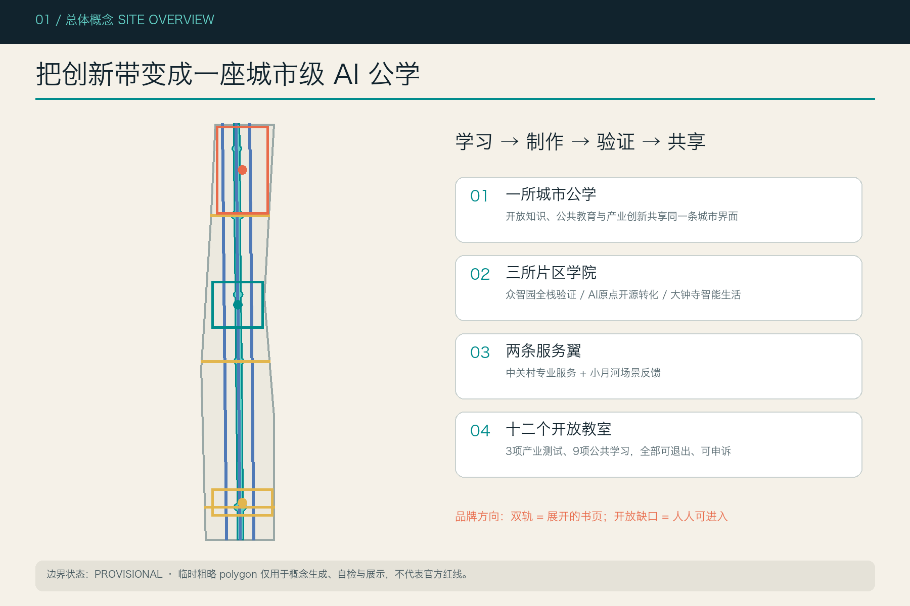
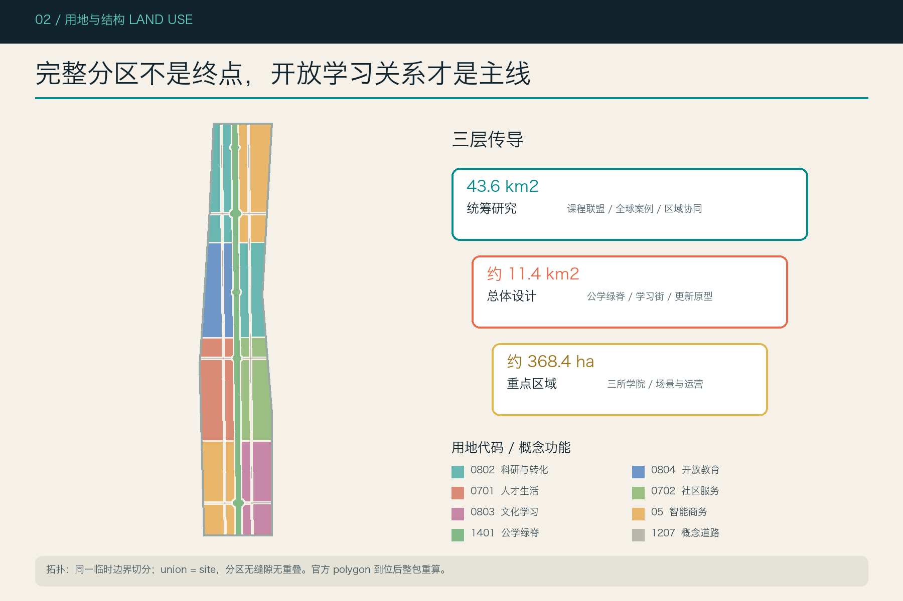
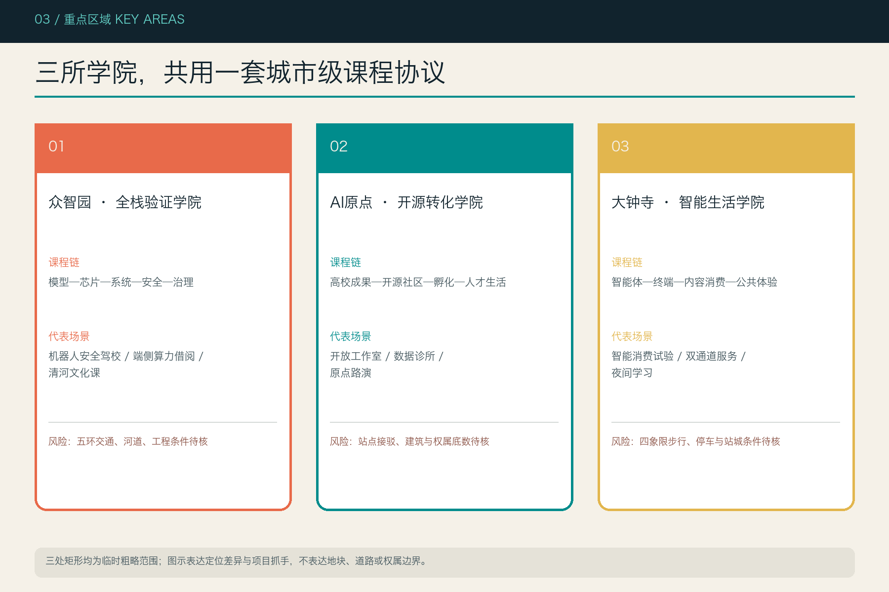
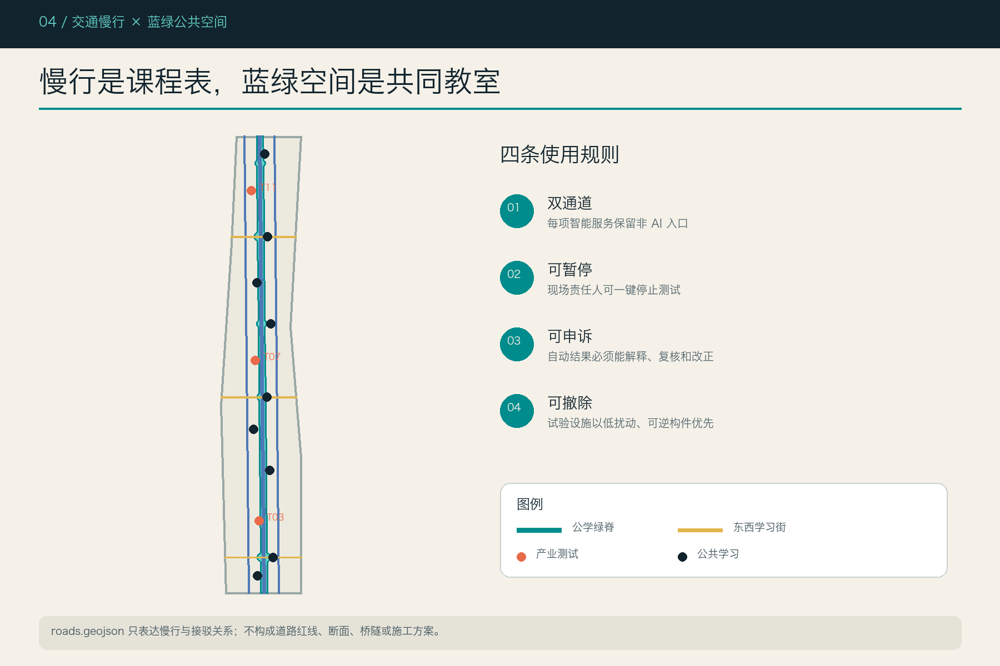
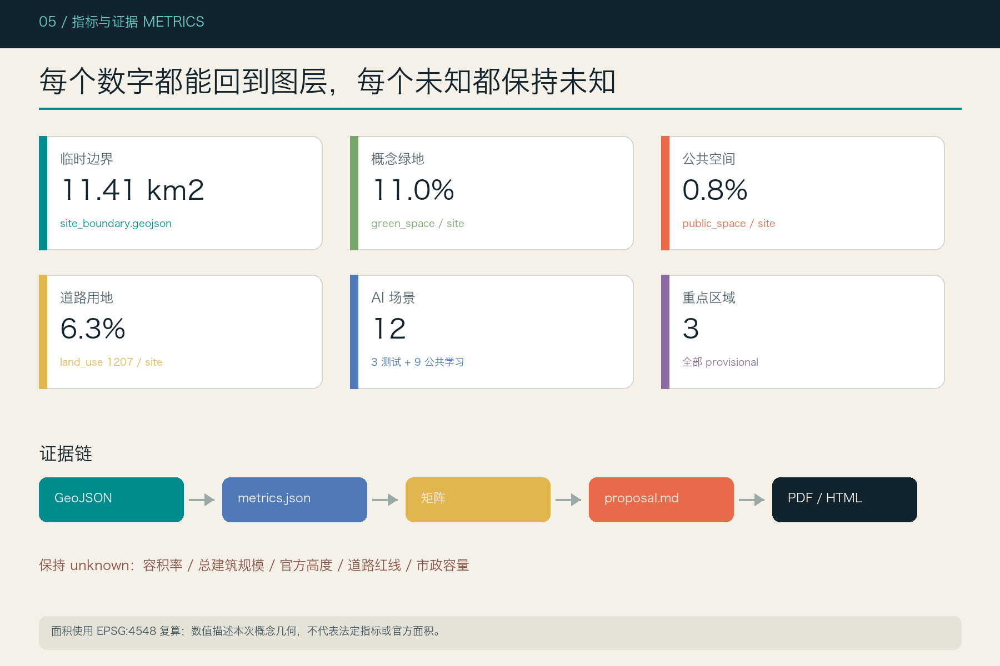

京张AI公学｜Jing-Zhang Civic AI School
把百年京张AI创新带构想为一座11.4平方公里的城市级AI公学：以学习—制作—验证—共享回路连接三区两翼，让产业创新、公共教育、场景测试与文化记忆共享同一套可进入、可质询、可迭代的空间接口。
京张AI公学｜Jing-Zhang Civic AI School
> 一座没有围墙、人人可进入、企业可验证、开发者可共创的城市级 AI 公学。所有空间落地建议均为概念建议、参考方案或可供专业团队深化研究，不替代正式规划，不构成政府审定结论。
设计依据与资料清单
本方案以官方公告确认的项目目标、三层范围文字和约面积为任务依据，以面向智能体任务书确认三大定位、五大功能、三区两翼与六项任务；用地分类、城市设计和控规边界分别响应本地标准快照。[source:OFFICIAL-ANNOUNCEMENT] [source:AGENT-TASKBOOK] [source:SITE-PACKAGE] [standard:PROJECT-OFFICIAL-ANNOUNCEMENT] [standard:PROJECT-AGENT-OPEN-CALL-TASKBOOK] [standard:MOHURD-URBAN-DESIGN-MEASURES] [standard:MOHURD-CONTROL-DETAILED-PLANNING] [standard:MNR-LAND-USE-CLASSIFICATION-GUIDE]
资料分为三层：A 类 formal-ready 资料支撑任务、约面积与原则；B 类背景案例只支撑机制比较；P 类临时空间资料只支撑生成、自检与展示。公开资料登记表与事实包用于防止越界升级。[source:SOURCE-REGISTRY] [source:PROCESSED-FACT-PACK] 临时总体边界与重点区 polygon 来自仓库维护者推定资料，均设置 official_boundary=false 与 geometry_role=provisional_constraint。[source:BOUNDARY-SOURCE] [source:KEY-AREA-SOURCE] [data:geometry/site_boundary.geojson#SITE-001] [data:geometry/key_areas.geojson#KEY-001]
建筑工程设计深度规定尚缺官方文件，只作为数据缺口记录，不作为本方案权威依据。[standard:MOHURD-ARCH-DESIGN-DEPTH-2016] 现状、控规、道路、建筑、文保、市政和权属缺口分别记录在 assumptions.json；本方案以“知道什么、如何生成、哪里不确定、何时重算”构成审计链。[depth:existing_conditions_diagnosis] [depth:risk_missing_data]

三层范围工作框架
统筹研究范围约43.6平方公里，负责产业网络、区域协同和全球案例转译；总体设计范围公告约11.4平方公里，负责开放公学的空间骨架、更新原型、慢行蓝绿与服务系统；三处重点区域公告合计约368.4公顷，负责把“学习—制作—验证—共享”拆成可深化的片区课程。[source:OFFICIAL-ANNOUNCEMENT] [depth:three_level_scope_framework]
本次提交边界经 EPSG:4548 复算为约 1141.3 公顷，仅说明临时 polygon 的几何面积，不替代公告约面积，更不能作为官方红线或精确评分依据。[metric:site_area_sqm] [data:geometry/site_boundary.geojson#SITE-001] 三处重点区的临时矩形只承担定位和任务索引；当官方 polygon 到位时，需同时重做用地分区、公共空间、建筑原型、分期、全部面积指标、五张图、HTML 和 PDF，不能只替换边界文件。[data:geometry/key_areas.geojson#KEY-002]
三层传导不是简单放大：统筹层提出“城市级公学”制度，整体层形成连续开放课程线，重点区形成全栈验证学院、开源转化学院与智能生活学院。每层都保留公开资料、人工复核和专业深化接口，避免把愿景直接写成地块结论。[depth:overall_spatial_structure]

统筹研究范围产业与未来城市研究
主名称“京张AI公学”强调公共性与学习型创新，英文名为 Jing-Zhang Civic AI School。识别系统不使用企业商标：两条平行线既是京张铁路，也是展开书页；一枚开放缺口表示任何人可进入，青绿色代表开放知识，朱红色代表百年工程文化，金色代表公共荣誉。该方向是原创字标与几何规则建议，不含第三方字体或图像授权主张。[standard:PROJECT-AGENT-OPEN-CALL-TASKBOOK]
三大定位被转译为三门“城市课程”：百年京张文化带教会 AI 记住工程伦理与地方历史；都市 AI 生活体验带让居民拥有理解、拒绝与申诉智能服务的能力；AI 融合创新带让企业在公开规则下完成研发、验证和转化。五大功能通过“学习—制作—验证—共享”闭环协同三区两翼：中关村科技服务翼提供资本、人才、知识产权与专业服务，小月河场景赋能翼提供低风险公共测试与反馈。[depth:overall_spatial_structure]
全球案例只提炼机制，不复制空间形式或招商结论：
| 案例 | 可转化机制 | 京张转译 | |---|---|---| | Kendall Square | 研究、企业与街区生活高密邻接 | 把共享教室与交流空间放在创新载体首层 [source:CASE-KENDALL-SQUARE] | | Toronto Vector Institute | 研究、人才、产业伙伴与负责任 AI 协同 | 建立“公开课程+产业课题+治理审查”的项目制 [source:CASE-TORONTO-VECTOR] | | Singapore one-north | 研发、产业、生活和公共空间复合 | 三个重点区共享慢行、公共服务与活动日历 [source:CASE-SINGAPORE-ONE-NORTH] | | Paris STATION F | 大型共享创业校园与社群项目 | 形成可预约的原型工坊、导师台与公开路演 [source:CASE-PARIS-STATION-F] | | London Knowledge Quarter | 文化、科研、教育、社区机构的地区网络 | 用“课程联盟”连接机构，而非只靠物理集聚 [source:CASE-LONDON-KNOWLEDGE-QUARTER] |
五个案例形成案例数量指标，但均标为背景机制，不支撑本项目官方边界、强度、投资或承诺。[metric:global_case_count]
总体设计范围城市更新与控规深度城市设计
总体结构为“一所城市公学、三所片区学院、两条服务翼、十二个开放教室”。南北向京张遗址公园概念绿脊负责文化、生态与公共学习；三条东西向开放学习街负责缝合社区、高校、园区与轨道接驳；两条平行慢行链分担日常骑行。几何通过同一临时边界切分并完整覆盖，不以独立手绘多边形拼接。[data:geometry/land_use.geojson#LU-009] [data:geometry/roads.geojson#ROAD-001] [depth:land_use_layout] [depth:traffic_rail_slow_parking]
城市更新采用“先开放、再改造、后增补”的可逆顺序：先把可进入的一层、廊下、院落和边角地转为共享教室；再对经核实可保留建筑做节能、无障碍和复合使用改造；只有在权属、现状、控规和专业评估齐备时才讨论增补载体。buildings.geojson 只是空间原型包络，明确不对应具体单体和最终拆改留。[data:geometry/buildings.geojson#BLDG-001] [depth:retain_renovate_demolish]
开发强度、高度、建筑密度、退线、道路红线、四线和市政容量均保持 unknown。方案只提出“低层公共基座、可见楼梯与共享平台、沿公园退让的通透界面、可撤除轻量构件”等风貌语言，供专业团队在正式条件下深化。[depth:development_intensity_controls] [depth:height_massing_character] [standard:MOHURD-CONTROL-DETAILED-PLANNING]
重点区域详细设计
三处重点区均使用 provisional polygon，以下内容是“定位+空间结构+更新原型+场景+风险”的方向性设计，不表达道路、宗地、权属、建筑拆除或工程结论。[data:geometry/key_areas.geojson#KEY-001] [depth:three_key_area_detailed_design]
**众智园｜全栈验证学院。** 以“模型—芯片—系统—安全—治理”连续公开课组织研发与测试界面；花园型共享实验院承接机器人安全驾校、端侧算力借阅和模型能耗公开课。概念建筑以保留和改造优先，可逆增补形成开放测试廊；清河文化与绿色空间作为公共课程，而非科技装饰。对外交通、五环衔接、河道和工程条件待专项核实。[data:geometry/key_areas.geojson#KEY-001]
**北京AI原点社区｜开源转化学院。** 以近校型创新为核心，把高校成果、开源社区、孵化服务和居民学习组织为“开放工作室—数据诊所—原型路演—人才生活”四段。五道口及清华东路西口方向只表达接驳需求，不给工程线位；更新策略优先使用首层开放、共享会议与生活服务织补。[data:geometry/key_areas.geojson#KEY-002]
**大钟寺｜智能生活学院。** 以智能体、智能终端和内容消费的公开体验为重点，设置“可解释价格、可退出推荐、人工客服兜底”的智能消费试验室。四象限步行连通、非机动车停放和站城一体化均作为待交通专项深化的问题清单；公共环境提升先从可逆设施、夜间照明和无障碍连续性入手。[data:geometry/key_areas.geojson#KEY-003]

AI 创新生态、人才画像与 AI+ 场景
公学面向六类人：科研人员需要快速验证与跨学科伙伴；创业团队需要共享原型、法规和客户反馈；产业工程师需要可复现测试；居民与长者需要可理解、可拒绝的服务；青少年与学习者需要低门槛实践；城市管理与专业人员需要审计、申诉和回滚工具。[metric:persona_count] 每个画像都对应空间、课程、运营和非 AI 替代，不以采集个人隐私作为参与门槛。
十二张场景卡如下，其中 T01、T02、T03 为产业测试验证场景；所有场景先小规模、需人工放行、保留非 AI 通道、可暂停与可申诉。[data:geometry/public_space.geojson#SCN-003] [metric:scenario_node_count] [metric:industrial_test_scenario_count]
| 编号 | 场景卡 | 空间 / 服务对象 | 数据与人工复核 | 运营建议 | |---|---|---|---|---| | T01 | 机器人安全驾校 | 众智园封闭可撤除测试庭 / 研发团队 | 合成与现场最小数据；安全员一票暂停 | 预约制公开测试 | | T02 | 城市数字孪生沙盘 | 原点社区开放工作室 / 规划与公众 | 只用公开或清权数据；专业人员复算 | 版本化课题 | | T03 | 智能消费试验室 | 大钟寺公共首层 / 商户与消费者 | 不保存生物识别；人工客服兜底 | 限时、可退出试验 | | S04 | 百年工程问答站 | 遗址公园 / 游客 | 答案附来源；史实由策展人复核 | 文化课程 | | S05 | 模型公开课场 | 五处开放教室 / 市民 | 模型卡与风险卡公开 | 每周公开课 | | S06 | 开源数据诊所 | 原点社区 / 社团与开发者 | 许可、脱敏与用途审查 | 月度门诊 | | S07 | 无障碍共创工坊 | 社区服务节点 / 障碍人士 | 不记录诊断；使用者决定公开范围 | 共同设计 | | S08 | 人才服务翻译台 | 轨道接驳节点 / 国际人才 | 最小化表单；人工翻译可选 | 多语志愿网络 | | S09 | 端侧算力借阅亭 | 众智园 / 学生和团队 | 本地处理优先；任务日志可删除 | 配额与能耗公开 | | S10 | 小月河生态观察课 | 蓝绿空间 / 学校与居民 | 只采环境数据；异常由专家复核 | 季节课程 | | S11 | AI原点路演教室 | 原点社区 / 创业者与公众 | 公开声明成熟度和局限 | 双月路演 | | S12 | 全球开发者毕业展 | 全带轮换 / 国际社区 | 展示许可和责任人齐备 | 年度公学周 |
用地、建筑规模与拆改留方案
用地分区采用国家分类子集，完整覆盖临时总体边界。核心不是追求单一产业占比，而是让科研、教育、居住、社区、文化、商业、绿地与道路形成“日常可学习”的复合结构。[standard:MNR-LAND-USE-CLASSIFICATION-GUIDE] [data:geometry/land_use.geojson#LU-001] [metric:land_use_0802_sqm] [metric:land_use_0804_sqm] [metric:land_use_0701_sqm] [metric:land_use_0702_sqm] [metric:land_use_0803_sqm] [metric:land_use_05_sqm] [metric:land_use_1401_sqm] [metric:land_use_1207_sqm]
建筑层只提交12个左右的概念包络样本，表达“保留并开放首层、改造为共享实验室、可逆增补、保留并节能升级”四类方法。概念建筑基底面积与覆盖率可由 GeoJSON 复算，但置信度为低，不能外推成总体建筑规模。[metric:building_footprint_area_sqm] [metric:building_coverage_ratio] [data:geometry/buildings.geojson#BLDG-002]
floor_area_ratio、total_floor_area_sqm 和 official_building_height_m 保持 unknown，待官方控规、测绘、建筑现状、权属、消防和文保条件齐备后由专业团队判断。当前几何只是一套空间供给方法测试，不构成任何具体地块拆除、保留、改造或新建决定。[depth:development_intensity_controls]
交通、轨道、市政与公共服务设施
交通策略以“步行一课、骑行一站、轨道一换”为概念目标：南北绿道提供连续慢行和课程节点，三条东西学习街缝合两侧，平行骑行链服务日常通勤；站点周边设置清晰换乘、非机动车整理和可访问休息点。线位全部裁切在临时边界内，但不代表道路红线、断面或工程可行性。[data:geometry/roads.geojson#ROAD-004] [metric:road_area_sqm] [metric:road_ratio]
新型基础设施采用“借阅而非占有”：小型端侧算力、传感器、显示和机器人通过公学设备库预约，公开能耗、数据范围、责任人和退役日期。市政侧优先建议可监测、可隔离、可回滚的接口，不做管线迁改、能源负荷、地下空间或消防容量结论。[depth:municipal_new_infrastructure]
公共服务遵循双通道：每项 AI 服务必须保留非 AI 入口，每个自动决定必须可由人解释、复核和改正；无障碍、儿童、长者与多语需求作为课程设计输入。公共设施底数缺失，因此本方案只提交服务网络和待核清单，不虚构学校、医疗、养老或停车容量。

蓝绿空间、公共空间与城市风貌
京张遗址公园被理解为“开放课程线”，而非技术设备展廊：轨枕尺度转译为路径节奏，站台逻辑转译为停留与发布空间，百年工程档案转译为可引用、可纠错的公共知识。概念绿地约占临时边界 11.0%，公共空间约占 0.8%；数值只用于方案内部复算，不对应法定绿地率。[metric:green_space_area_sqm] [metric:green_ratio] [metric:public_space_area_sqm] [metric:public_space_ratio] [data:geometry/green_space.geojson#GREEN-001] [standard:MOHURD-URBAN-DESIGN-MEASURES] [depth:blue_green_public_space]
三处“AI朝圣地标”不是巨型造型，而是公共制度节点：①百年工程开源档案站，展示来源、版本和纠错记录；②模型荣誉与责任墙，同时呈现贡献者、局限、失败与修复；③城市智能毕业台，只有完成公开测试、人工复核和公众说明的项目才能展示。三处数量进入指标，但具体位置、尺度与文保关系待专项深化。[metric:pilgrimage_landmark_count]
公共空间组件库包括开放讲台、双通道服务台、模型卡灯箱、可撤除测试围合、隐私告知牌、人工暂停按钮、无障碍休息台和贡献者铭牌。风貌以砖红、轨道灰、知识青和荣誉金构成；夜间照明控制眩光与屏幕亮度，不使用企业 Logo 占据公共界面。
更新项目清单、实施政策与分期计划
项目清单以“最小可行公共价值”为单位：P1五处开放教室、P2三条东西学习街、P3双通道服务台、P4机器人安全驾校、P5开源数据诊所、P6公共模型卡系统、P7无障碍共创工坊、P8百年工程开源档案站、P9端侧算力借阅、P10小月河生态课程、P11智能生活试验室、P12年度全球开发者毕业展。每项都需明确管理主体、许可、非 AI 备份、退出条件和维护预算，再进入专业深化。[depth:renewal_project_list]
分三期推进：近期先做低扰动公共学习节点、治理协议和慢行试点；中期连接三区的共享实验室、场景验证和文化课程；长期形成跨区域课程联盟与国际开发者网络。三期几何只是范围索引，不是政府开发时序或投资承诺。[data:geometry/phasing.geojson#PHASE-001] [metric:phase_count] [metric:phase_1_area_sqm] [metric:phase_2_area_sqm] [metric:phase_3_area_sqm] [depth:phasing_implementation]
年度运营建议包含“春季开源周、夏季城市智能驾校、秋季百年工程课、冬季责任AI论坛”四季主线，以及每周公开课、每月数据诊所、双月路演、年度毕业展。开发者贡献通过可追溯课题、公开测试记录和荣誉墙沉淀；人才与企业转化路径为“旁听—共创—验证—展示—落地评估”，所有活动均为概念建议。
指标体系、面积复算与合规矩阵
本方案的指标分为三类：几何可复算指标、任务覆盖数量和保持 unknown 的正式控制。临时边界面积、各类用地、绿地、公共空间、道路、建筑包络、重点区和分期均用 EPSG:4548 计算；场景、画像、案例和地标按正文与结构化节点计数。[depth:metrics_recalculation]
当前概念绿地比例为 10.96%，公共空间比例为 0.84%，道路用地比例为 6.26%；它们只说明本次方案的几何关系，不是审定指标。用地 union 等于临时边界，邻接边来自同一切分，避免独立手画造成重叠和缝隙。[metric:green_ratio] [metric:public_space_ratio] [metric:road_ratio] [data:geometry/constraints.geojson#CONSTRAINT-001]
三处临时重点区面积分别可从 KEY-001/002/003 复算，并同时保留公告约面积字段；复算差异不升级其权威等级。[metric:zhongzhiyuan_ai_acceleration_area_area_sqm] [metric:beijing_ai_origin_community_area_sqm] [metric:dazhongsi_ai_industry_cluster_area_sqm] [metric:key_area_count]
合规矩阵覆盖公告17项必答与 agent.1—agent.6；专业矩阵覆盖5项 mandatory 标准，建筑深度标准保持 data_gap；15项设计深度均以正文、图纸、几何、指标、来源、假设和自检形成证据链。[depth:existing_conditions_diagnosis] [depth:three_level_scope_framework] [depth:overall_spatial_structure] [depth:land_use_layout] [depth:development_intensity_controls] [depth:height_massing_character] [depth:retain_renovate_demolish] [depth:traffic_rail_slow_parking] [depth:municipal_new_infrastructure] [depth:blue_green_public_space] [depth:three_key_area_detailed_design] [depth:renewal_project_list] [depth:phasing_implementation] [depth:metrics_recalculation] [depth:risk_missing_data]
为保证机器审查可定位，以下列出全部已知指标引用：[metric:site_area_sqm] [metric:building_footprint_area_sqm] [metric:building_coverage_ratio] [metric:green_space_area_sqm] [metric:green_ratio] [metric:public_space_area_sqm] [metric:public_space_ratio] [metric:road_area_sqm] [metric:road_ratio] [metric:key_area_count] [metric:scenario_node_count] [metric:industrial_test_scenario_count] [metric:pilgrimage_landmark_count] [metric:global_case_count] [metric:persona_count] [metric:phase_count] [metric:land_use_05_sqm] [metric:land_use_0701_sqm] [metric:land_use_0702_sqm] [metric:land_use_0802_sqm] [metric:land_use_0803_sqm] [metric:land_use_0804_sqm] [metric:land_use_1207_sqm] [metric:land_use_1401_sqm] [metric:phase_1_area_sqm] [metric:phase_2_area_sqm] [metric:phase_3_area_sqm] [metric:zhongzhiyuan_ai_acceleration_area_area_sqm] [metric:beijing_ai_origin_community_area_sqm] [metric:dazhongsi_ai_industry_cluster_area_sqm]

风险、版权与合规说明
最大风险不是方案不够精细，而是把临时资料表达得过于精确。为此所有边界、重点区、建筑、道路、分期和公共空间均在属性、正文、图例、HTML 与 PDF 中重复标注其概念或 provisional 状态。官方 polygon 到位后必须整体重算，控规、权属、文保、交通、市政、消防与工程条件必须由相应专业团队确认。[source:BOUNDARY-SOURCE] [depth:risk_missing_data]
AI 场景采用最小数据、公开告知、人工复核、非 AI 替代、可退出、可申诉和可回滚原则；不使用个人隐私、内部企业数据、指定供应商或未经清权图像。历史叙事只引用可追溯公共资料，避免把文化变成科技装饰；地标、字体、图像、人物和企业标识需另行清权。
全部文字、结构化数据与程序生成图件按 report/copyright_statement.md 声明；本提交不声称官方批准、工程可行、投资落实或活动确定。人类评审与专业团队拥有最终判断权，公众反馈应进入后续版本记录。
参考资料
- 官方公告与本地快照 [source:OFFICIAL-ANNOUNCEMENT]
- 面向智能体任务书 [source:AGENT-TASKBOOK]
- Site package 与专业标准 [source:SITE-PACKAGE]
- 公开资料登记表 [source:SOURCE-REGISTRY]
- Agent 事实包 [source:PROCESSED-FACT-PACK]
- 临时边界与重点区 [source:BOUNDARY-SOURCE] [source:KEY-AREA-SOURCE]
- 全球机制案例 [source:CASE-KENDALL-SQUARE] [source:CASE-TORONTO-VECTOR] [source:CASE-SINGAPORE-ONE-NORTH] [source:CASE-PARIS-STATION-F] [source:CASE-LONDON-KNOWLEDGE-QUARTER]
- 核心结构化文件 [data:geometry/site_boundary.geojson#SITE-001] [data:geometry/key_areas.geojson#KEY-001] [data:geometry/land_use.geojson#LU-001] [data:geometry/buildings.geojson#BLDG-001] [data:geometry/roads.geojson#ROAD-001] [data:geometry/green_space.geojson#GREEN-001] [data:geometry/public_space.geojson#PS-001] [data:geometry/constraints.geojson#CONSTRAINT-001] [data:geometry/phasing.geojson#PHASE-001]